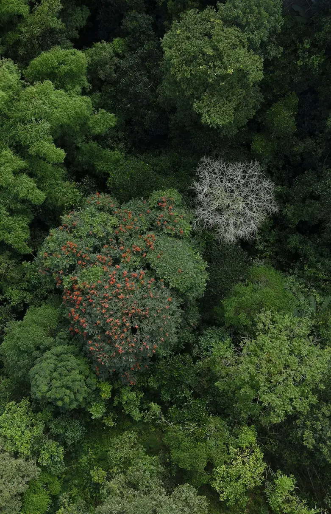
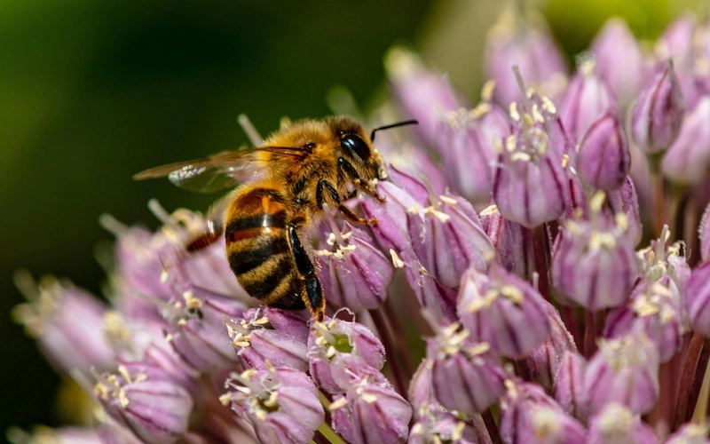
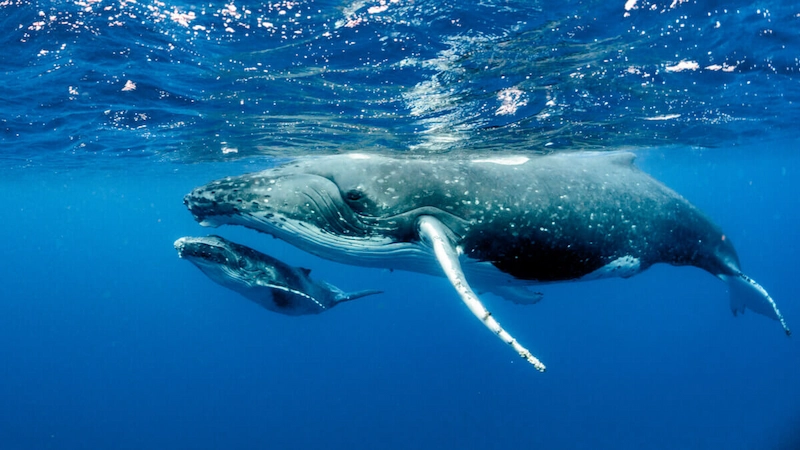

Cultive seus hábitos
Cada atitude rende folhas. Some, evolua e veja sua árvore ganhar vida.
0 folhas
Próximo nível em 200 folhas
Minhas tarefas
🔄 Apagar tudo
Sequência
Você ganha +5 folhas no primeiro feito do dia.
Conquistas

Primeiro dia

7 dias seguidos

Eco guardião
Escolha seu Quiz
Teste seus conhecimentos e ganhe folhas para fazer sua árvore crescer.
Descarte Correto do Lixo e Reciclagem
Identifique materiais recicláveis e seu destino correto.
Economia de Água e Energia
Descubra como pequenas atitudes economizam recursos naturais.
Biodiversidade e Cuidado
Como proteger plantas e ecossistemas ao seu redor.
Tutoriais em Vídeo
Aprenda em poucos minutos e aja hoje.

Montando uma composteira caseira
Transforme resíduos orgânicos em adubo com um setup simples.
Facil
Truques para cultivar vasos de temperos
Dicas de jardinagem e cuidados com plantas aromáticas.
Medio
Como cultivar sua horta de temperos
Seleção de vasos, irrigação e luz ideal.
#Fácil Video indisponível
Plantando muda de árvore corretamente
Abrir cova, substrato, tutor, rega de implantação..
Facil
Hotel de abelhas (polinizadores)
Monte seu abrigo para abelhas solitárias
Dificl
Separação de recicláveis sem erro
Como separar corretamente cada tipo de lixo.
FacilArtigos & Leituras
Conteúdo claro e confiável sobre natureza e clima.

Corredores de Biodiversidade: conectar florestas salva espécies
O que são, por que importam e exemplos no Brasil.
Ler no Site Oficial →
Polinizadores do Brasil: abelhas nativas, beija-flores e morcegos
Quem são, plantas amigas e como atrair sem veneno.
Ler no Site Oficial →
Baleias-jubarte no Brasil: por que são essenciais para a vida marinha
Entenda migração, papel ecológico e a recuperação da espécie.
Ler no Site Oficial →